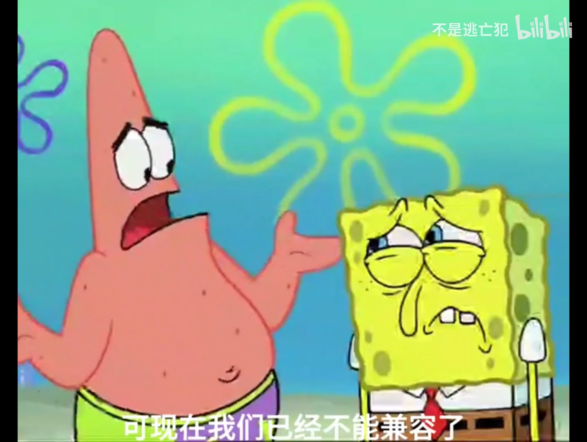
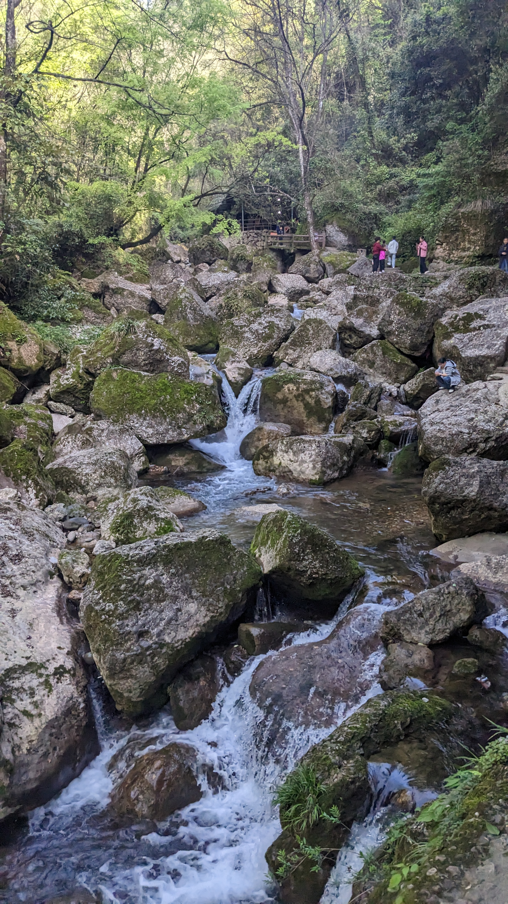
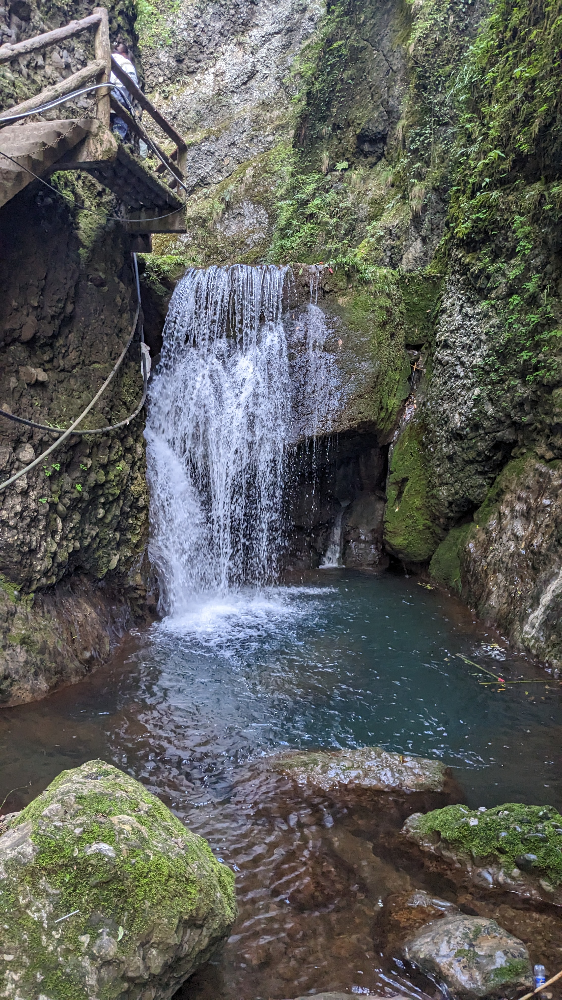
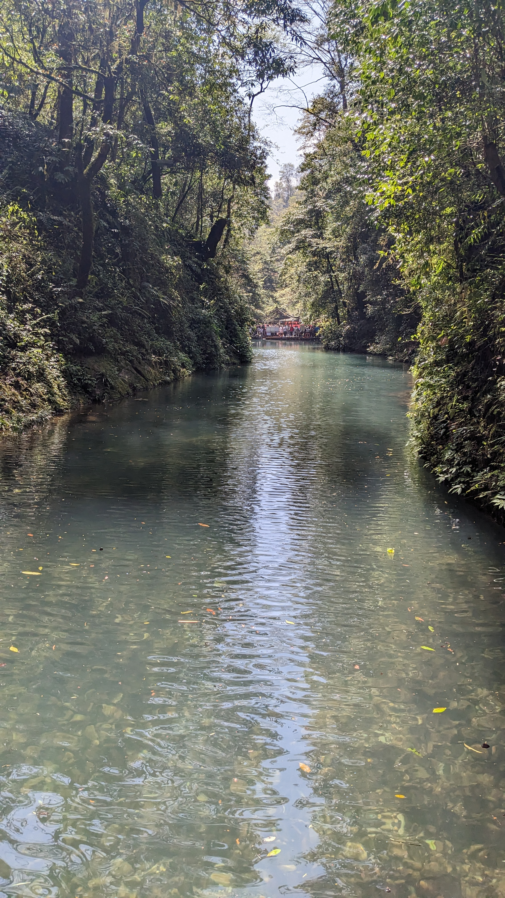

Overview
“兄弟，我们已经不兼容了”

前些天是清明节，不同于以往的回家祭祖，这次我破天荒的决定出去旅游，好好放松下自己。
那么驱动我做出这一决定的动力是什么呢？
原来是我的室友就在附近的城市，提前几个月我就与TA进行了联系，得知TA要在成都出差一段时间，再加上与TA频繁的“技术互动”，我本着能帮一个是一个的原则，加之以前上学的遗憾。
我决定前往成都。
前菜
本次算是我首次主动计划出游，真没想到要考虑的事情还蛮多的（之前都是被动）。
目的地，出行方式，住宿，预算，要带的东西，天气等等因素都要考虑（暴露了我是计划性人格是么）。
就算是有很多要考虑的东西，上网一搜，基本上也就七七八八了。
我个人一向反感“特种兵”式的旅游模式，那种模式实在是太不值得了。
相反，我个人推崇“缓进”策略，不要把自己搞得太累，旅游是换个地方去放松的，不是换个地方找罪受。
我与TA表达我要来的想法后，TA也表示支持。
于是乎，我们都在默默等着那一天的重逢。
插曲
我提前请了一天假，原本想着是人能少一些，结果还是那么多。。。
那天早上我一起来就发掘身体不大对劲，应该是昨晚吃了公司发的“僵尸柑橘”，肠胃极其不适并且浑身无力。
在简单吃了几块“僵尸饼干”后，肠胃招架不住开始翻江倒海，我去了一次厕所，回来仍然不好受，我想着是不是得运动运动，于是做起了原地开合跳。
这一跳，给我整恶心了，直接嘎嘎吐，恨不得把肠子呕出来。
不过经过这一吐，倒是能好受些了。
回来躺着休息了一会儿，看到时间到了，经过了一番思想斗争，还是坚持爬起来启程赶往高铁站。
我意识到自己缺乏电解质和盐分，于是慌忙塞了口牛肉干（荷马买的，味道不错），喝了口海之燕，就摊在我的座位上假装睡着了（装唐阴肠胃一手）。
经过一路颠簸，在加上电解质的补充和模糊的睡意，终于，肠胃咕咕叫了，身体的乏力感也消失了，我喜不自禁，奖励自己再睡一会儿，到站了再进食。
初见
好不容易找到酒店，直接躺下，开始与TA联系，看看TA啥时候下班。
TA说得8点左右才能到，到时候一起吃个饭。
我想也还行吧，于是就躺着看看电视企图骗下我的肠胃先生。
事实证明我错了，肠胃先生的威力还是巨大的，尤其是在近一天内没有任何正常进食的情况下。
于是我也顾不得什么了，直接开始点外卖，TA到位了我再给TA点一顿就是了。
外卖很快抵达，我也以迅雷不及掩耳之势将食物哄入腹中，终于是缓过来了。
这时候，TA也到位了。
当时我就躺在床上，像一个病人一样，没有起身迎接我们毕业后的首次重逢。
久别重逢，你好啊，人。
我们聊了一些有的没的，TA迫不及待地向我展示了TA现在的工作。
嗯，有点东西，经过TA的讲解，我也算是了解了。
我也带了电脑（Sorry，谁家好人出来旅游还背着电脑a），我是出于绩效压力，得连夜写完提交。。。
TA也切换到了工作模式，说是什么处理考勤（TA现在也算是个领导），emmmm，他们并没有引进考勤系统，一切都是原始的Execel表格。。。。
就这样，一副滑稽的场景出现了，两个出来旅游的人在隔音不是很好的酒店敲键盘？
首战
我们的第一站就是青城山，预计徒步8小时的大环线，早上6点起来，8点到站，9点半准时开趴。
和其他的旅游景点一样，出站后总有黑车司机拉客，这次也一样，不过我也是后知后觉，那TM就不是官方工作人员！
一个劲儿的引导游客从另一边走，额，我们也就往那里走了，一买票，平均60一个人还往返不包门票（官方价格32往返）。
不过这车也倒是比官方大巴快一些，人齐了就走，还给拉到登山口，下山直接招呼就完了，不用再去排队大巴。
此次爬的是青城后山，前面一段以栈道为主，枯木乱石，涓涓细流，时而可见的小型瀑布，让我的多巴胺疯狂分泌。
TA给人一种很急的感觉，好像登顶才是TA的目标，不过这沿途景致。。。。
我也就在这间隙之中，快拍了几张。




后面就是单纯的台阶爬升，给我的小腿+大腿造成了很大的困惑。
最终还是登顶了，不过没上到白云寺（还要一段恐怖的70度垂直爬升）。在底下的一个平台胡乱找了一家店，点了份细面补充下盐分预备下山。
吃饱喝足后便开启了下山之旅，这下山才是最难的，对我的膝盖发起了极大的挑战。
一路磕磕碰碰，终于到了金骊索道，体验了一把索道，emmmm，一车里面坐6个人，略显拥挤，体验不好。
好在能直接从索道出口的一个停车平台直接呼叫我们的来时车。
这位光头司机的开法那叫一个凶悍（不知道他在家里是不是也这样hh），找到缝隙就往里钻，大哥，这TM是山路！你真以为你是86下山？搞不好来个李有田下山。
好在最后平安抵达二级出发点，他们这衔接的挺好啊。
BTW，此次大环线总耗时7小时，算是正常范围吧，毕竟人也挺多。
问题来了，一辆4座出租车，怎么塞下6个人？
好吧，挤一挤总会有的。
我幸运啊，在副驾驶位，不一会儿就睡着了，迷迷糊糊听见前面追尾了，得堵上一会儿。
zzzzz….
猛地惊醒，困意全无，一查高德地图，前面的事故应该是处理了。
我给司机老哥一说我们着急，高铁赶时间，司机老哥不语，提醒我抓好扶手，一脚油门窜出去了。
好在一路上畅通无阻，在高铁发车的前5min我们抵达了，来不及解释了，三下五除二安检、上楼梯、登车一气呵成。
今天还算是幸运的了，上山没堵，下山也没堵，临下车，司机老哥给我展示了下当前的下山实况，好家伙，堵成麻瓜了。
累了这么一天，有点期待晚上的进食了。
矛盾
我们有换了个酒店，就在离我们出高铁站不远的地方。
休息了一会儿后，我们打算去吃点东西，我也没想那么多，就让TA定下三个地方，然后共同商议前往。
TA选完了，我一看，一家自助，一家点菜式火锅，另一家不记得了。
我个人偏向于点菜式火锅，于是我俩就动身前往，打的网约车。
一开门，我让TA先上去，咱俩坐后排一起唠唠，结果TA婉拒了，说是晕车，所以TA就坐前面去了。
Ok啊，很快到了地方，结果一看排队的人也忒多了，我们决定换场。
我很快就锁定了一家贵州酸汤火锅，算不上太辣，同时也是我第一次体验酸汤火锅。
于是我们一齐前往，幸好是有位子的。
我俩很快入座，打蘸碟，上菜，开火，涮肉，本该是来打牙祭的。
在TA看着一边儿的推荐菜一边儿说太贵了开始，事情就不对劲了起来。
我一边涮着肉，一边看着TA把一大堆素菜往里面加，我立马叫停，跟TA解释说，咱们先把肉吃，这菜容易熟，一烫就能吃，这么早下进去后面是会老的。
我还想加盘毛肚呢，你说说这……
TA立马反驳道，那这些菜呢？你不吃了？
我欲言又止，好像那做错事情的孩子沉默了。
我俩都沉默了，TA化身素食主义者，我化身肉食收割机，只见两双筷子在锅内上下翻动，忙得不亦乐乎。
随机
沉默的状态断断续续地一直持续到倒数第二天的早上。
此次来成都，一为爬山，二为叙旧，三为兔头。
中午准备去吃兔头来着，结果目的地不营业，我们只好对付了几口面。
我还在想该去哪里时，因为我还想去什么武侯祠，杜甫草堂什么的，结果一想人可能太多了，所以就不了了之了。
TA率先提出去环球中心吧，我想也行吧，总算是有个地方去。
于是我们立即出发。
TA本来想带我去海洋乐园来着，结果69一人打消了TA的念头。
于是TA意思我们周边随便逛一逛，于是我们来了一场室内city walk。
后面走累了，TA提议一起打台球去，于是兜兜转转找了一家自助台球厅，开了俩小时打了起来，战绩好像是平了，算是菜鸡互啄吧。
Ok啊，又到了吃什么的环节了。
我原本就是想吃兔头和冷吃兔的，于是又定位了一家评分还不错的可堂食店（在天府广场附近）。
到店之后，等服务员很快把兔头和冷吃兔端上了时，又不对劲了。
TA说到这不就是预制菜嘛，有啥好吃的……这份量也不咋地还能卖这么贵，这兔头又没多少肉……不如打包回去吃……说实话还没上午那碗铺盖面好吃……
我欲言又止（冷吃兔其实就是天生预制菜……），带起手套开始肢解兔头，吮吸上面的每一粒肉丁。
这一刻，我化身无情的干饭机器，尽力攫取餐桌上的每一分营养。
兔头不错，冷吃兔也不错，我们却错位了。
技术
又是一夜沉默，到了我快离开的时候了，TA让我协助处理下在WSL环节下Docker的网络配置，拉取镜像一直在超时什么的。
这方面我算是踩了一些坑吧，久病成良医，顺手的事，无非是防火墙的问题，网络代理的问题。
三下五除二，花了大概半小时就搞定了（你要问我AI能不能搞，我的回答是，可以，除非是系统级别的AI，否则永远解决不了）。
时间到了，我们分道扬镳了。
回顾
回去的路上，我一直在思考，两个人的价值观不同真的很难兼容，我能明显感觉到距离，也许我们只适合在网上对对线，搞搞抽象吧。
又或许是TA家里突然出现的变故以及压榨的公司老板和薪资的限制，种种因素导致此次旅途的相对不愉快瞬间。
听说TA也有了对象，打王者认识的，异地，每天晚上和其他热恋期的情侣一样都要煲电话粥。
怎么说呢，祝TA好运吧。
我能帮则帮，只不过应该不会再主动约见了。
我们的世界没有交叉点，平行的两个世界。
再会，朋友，下次见你又是多少年之后了。
Summary
“经济基础决定上层建筑。”
经此一役，我对这句话有了更深的理解了。
情侣关系以生理性感情及陪伴依赖性为驱动，夫妻关系则以经济能力为纽带，长期的感情基础为润滑剂。
情侣关系是夫妻关系的诱因。
柴米油盐酱醋茶，这些才是”普通”家庭结婚的必要考虑因素。
以上是我从单一客观事实推导的一般性主观结论，仅供参考，毕竟此刻我还是个单身汉。
So what?